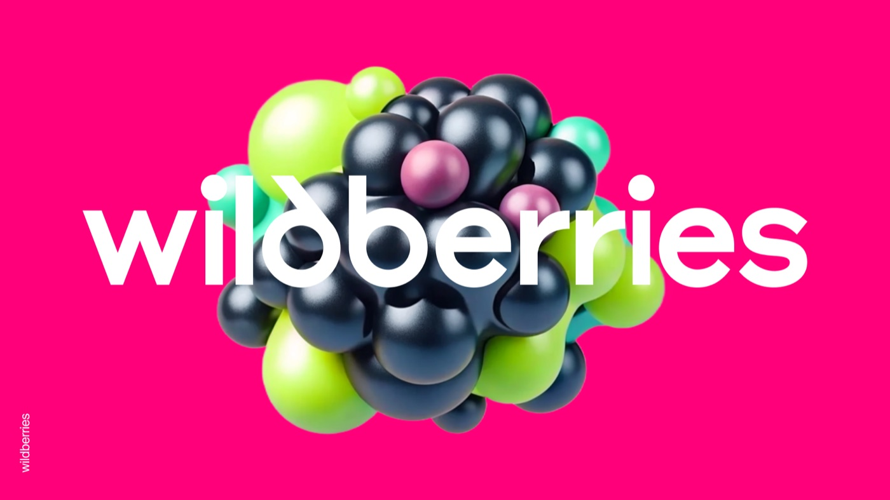
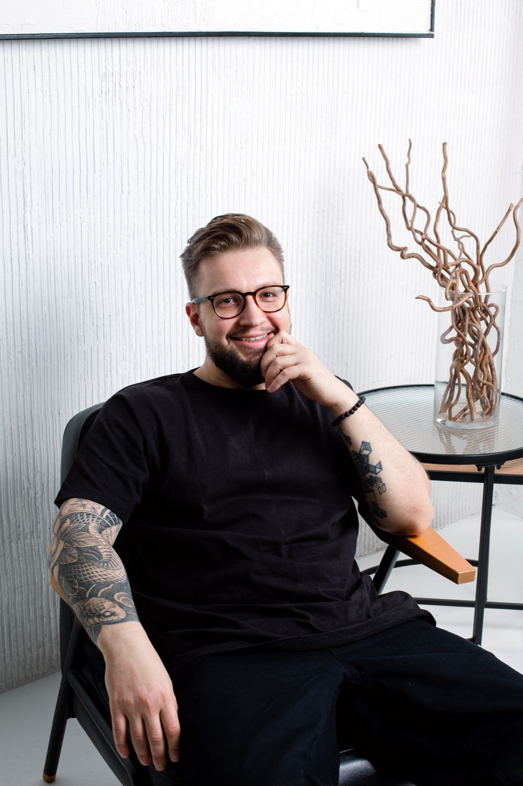
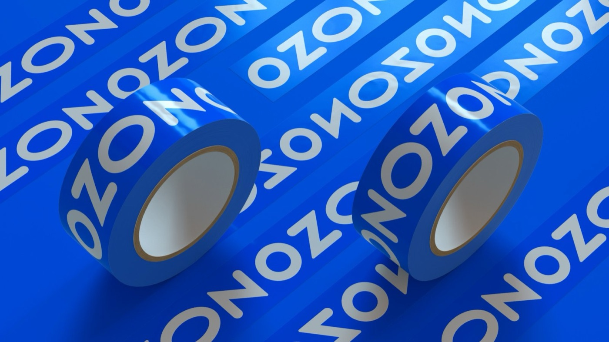
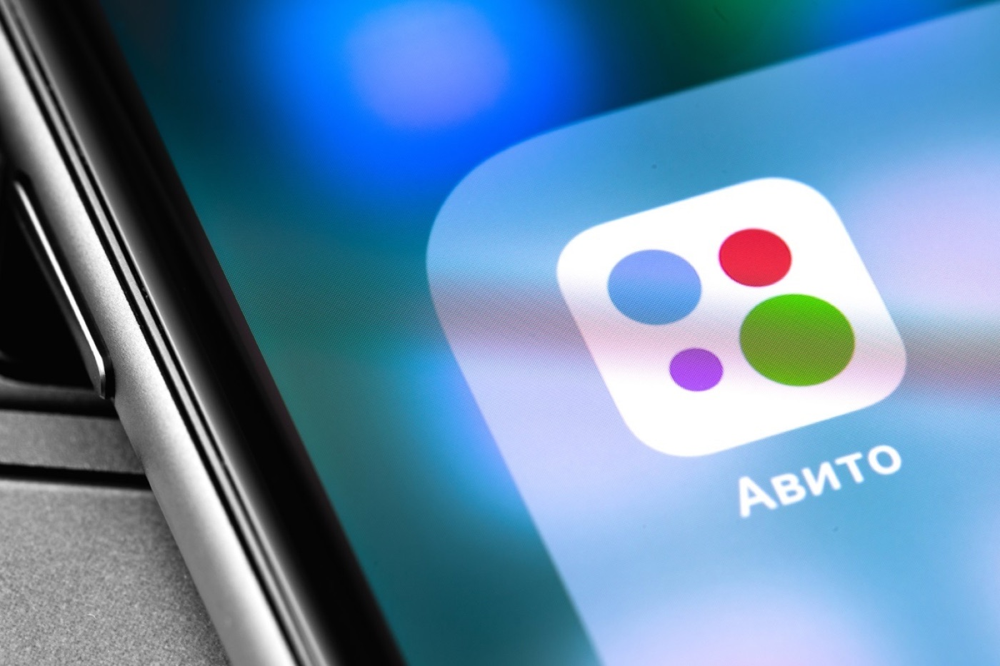
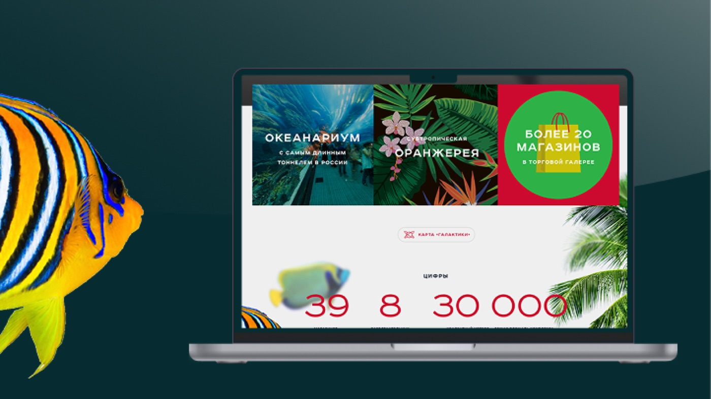
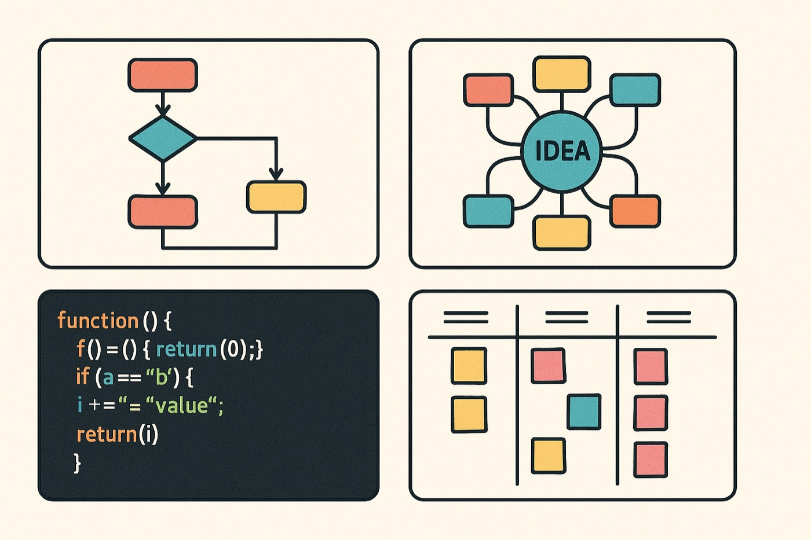

Wildberries
2023–2025 · Мобильное приложение и портал продавцов
Дизайнер интерфейсов и дизайн-менеджер с 15-летним опытом. Работал в Wildberries, Ozon, Сбере и ВТБ.

2015–2025

2023–2025 · Мобильное приложение и портал продавцов

2021–2023 · Ozon ID, ERP-системы, база знаний
2017–2020 · Сбербанк Онлайн, кредитные карты

2022 · Концепт страницы объекта недвижимости

2014–2015 · Сайт «Галактики» получил награду «Золотой сайт»

Процессы, база знаний и обучение команды
Как тимлид, умею выстраивать прозрачные процессы, вдохновлять команду и помогаю каждому дизайнеру раскрыть свои сильные стороны.
15 лет
Полный цикл дизайна цифровых продуктов для B2B- и B2C-направлений банка: проектирование, исследования, прототипы, пользовательские сценарии, юзабилити-тесты и сопровождение разработки.
Визуальный контент для SMM-стратегий международных брендов: Mazda, Bosch, Philips, Siemens, Borjomi, Garnier, Vichy и других.
Фирменный стиль, дизайн-стратегии и интерфейсы сайтов для компаний разных отраслей — от сбора требований до сдачи продукта.
Дизайн цифровых продуктов для частных американских компаний и госструктур — медицина, пожарная безопасность, недвижимость.
НГТУ, механико-технологический факультет
Инженер-конструктор, специалист
Интенсивы по мобильным приложениям в БВШД, курсы Skillbox, внутренние курсы по UX-исследованиям в Сбере и Ozon, менеджмент в «Богданов и Партнёры», ТРИЗ.
Хожу на Design Prosmotr, ffdd2d, «Дизайн-выходные». Коллекционирую книги по дизайну.
Английский — B1+